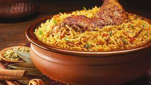

Chicken Biryani

Description
This is a delicious Pakistani/Indian rice dish which is often reserved for very special occasions such as weddings, parties, or holidays such as Ramadan. It has a lengthy preparation, but the work is definitely worth it. For biryani, always use long grain rice. Basmati rice with its thin, fine grains is the ideal variety to use. Ghee is butter that has been slowly melted so that the milk solids and golden liquid have been separated and can be used in place of vegetable oil to yield a more authentic taste.
Ingredients
- 4 tablespoon vegetable oil
- 4 small potatoes, peeled and haved
- 2 large onions, finely chopped
- 1 tablespoon minced fresh ginger root
Steps:
- In a large skillet, in 2 tablespoons vegetable oil (or ghee) fry potatoes until brown, drain and reserve the potatoes. Add remainng 2 tablespoons oil to the skillet and fry...
- When the mixture is thick and smooth, add the chicken pieces and stir well to coat them with the spice mixture. Cover and cook over very low heat until the chicken is...
- Wash rice well and drain in colander for at least 30 minutes.
- In a large skillet, heat vegetable oil (or ghee) and fry the onions until they are golden. Add saffron, cardamom, cloves, cinnamon stick, ginger and rice.